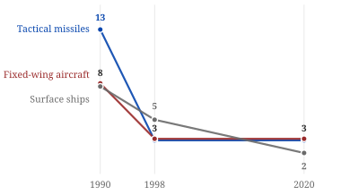
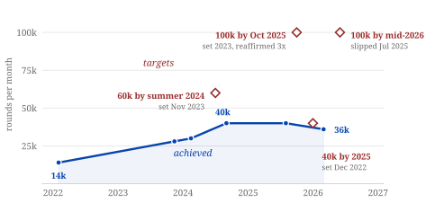

August 2026
In the fall of 1993, Secretary of Defense Les Aspin and his deputy William Perry invited the chief executives of the biggest American defense contractors to dinner at the Pentagon and told them, over what the industry still calls the Last Supper, that the post–Cold War budget could not keep them all alive. Perry told them: "We expect defense companies to go out of business. We will stand by and watch." They did. Within a decade, fifty-one prime contractors merged down to five.

I fell down this rabbit hole watching the drone war in Ukraine and wondering why the country with the largest defense budget on earth kept showing up in the reporting as the one that couldn't make enough of anything. The answer kept tracing back to that dinner. What surprised me most is that the buyer itself admits the problem: the Pentagon's own 2022 State of Competition report counts the collapse segment by segment and concludes that the consolidation it once encouraged now works against it.
Since 2022 the base has been through a live stress test, and the results are public.
The Army began 2022 making about 14,000 artillery shells a month and set out to reach 100,000. Three years and $5 billion later it makes about 40,000, and every target date has slipped, most recently to mid-2026. The centerpiece of the expansion, a $469 million automated shell-casing plant in Texas, had produced no usable subcomponents as of March 2026, more than two years in.
Precision didn't hold up either. The GPS-guided Excalibur shell went from a 55 percent hit rate in Ukraine in January 2023 to 6 percent by August, once Russian jammers found it, and Ukraine stopped using the round. And when CSIS wargamed a Chinese invasion of Taiwan twenty-four times, the United States ran out of its most important anti-ship missile in the first week of every iteration, against a production line building 88 a year.

The cheapest way to feel the problem is the exchange rate between drones and interceptors. A Shahed-class drone costs Russia $20,000 to $70,000. The missiles fired to stop it cost $1.8 million to $5.3 million each, and doctrine often fires two per target. Set up a raid and see what the defense costs, and what happens when the raid outgrows the magazine.
A deliberately simple model: interceptors are assumed to work, and the raid only wins by emptying the magazine. Reality is messier in both directions. For scale, over fifteen months of Red Sea operations the Navy fired about 220 interceptors, near $1 billion worth, against drones and missiles that cost a small fraction of that to build.
Washington noticed. The fiscal 2026 defense bill is the biggest acquisition reform in a generation: dozens of regulations repealed, contracting timelines compressed, new on-ramps for commercial firms. All of it makes the Pentagon a faster buyer, and none of it changes how many sellers exist. Six of the seven weapons segments the Pentagon flagged in 2022 still have one or two qualified suppliers, and speeding up the paperwork does not add a second builder of solid rocket motors.
The historical record says structure is the lever that works. In the 1980s the Air Force forced Pratt & Whitney and General Electric to compete year after year for fighter-engine buys, the Great Engine War, and got roughly 20 percent life-cycle savings plus a sharp drop in engine failures. The same record cuts the other way for some programs: for low-volume missiles, running a second production line cost more than it saved. Competition pays where volume is high enough to climb the learning curve. That argues for dual-sourcing chosen segment by segment, protection for the new entrants already arriving, and breakups only where nothing else works.
Ukraine is the existence proof that a distributed base can out-produce a concentrated one under far worse conditions. Its domestic drone industry went from a handful of makers before the invasion to roughly 500 serious manufacturers, with about 2,500 registered on Brave1, the state's procurement cluster, iterating against Russian jamming on a cycle of weeks.
Everything above is the short version. The full paper, with the models, figures, and about 140 primary sources behind every claim, is below: Competition by Design: Why the United States Must Deconsolidate Its Defense Industrial Base, 44 pages. You can also download the PDF. If you work on defense industrial policy, or you think I'm wrong somewhere, email me.